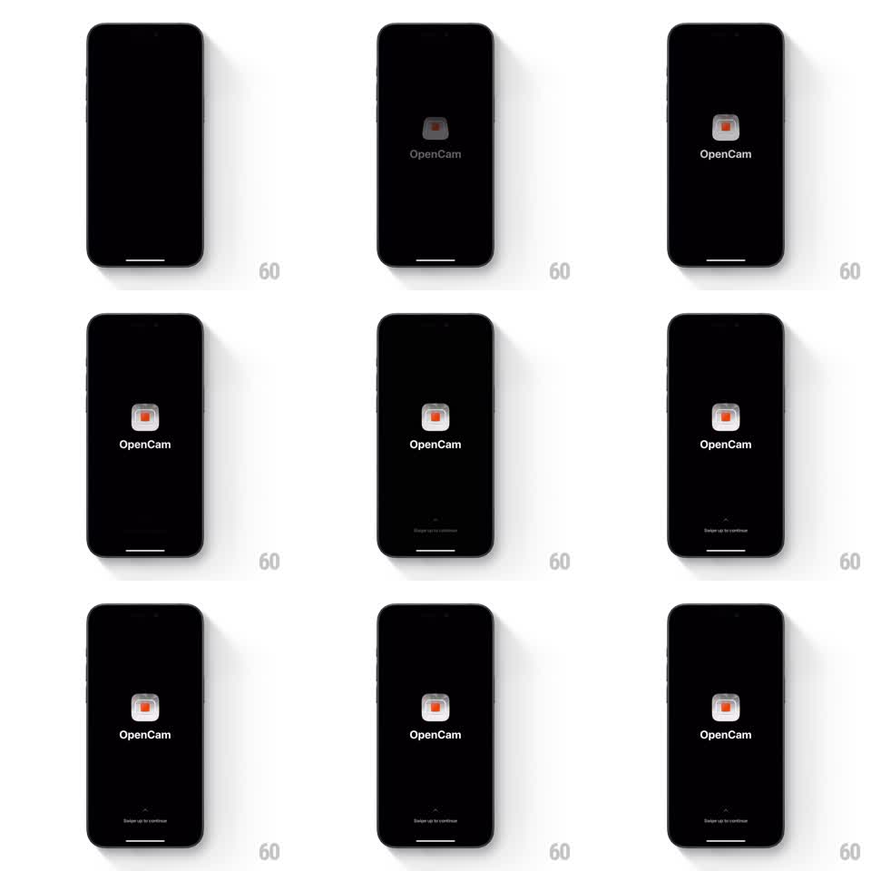

Media
Frame-by-frame

Rebuild this animation 1:1: OpenCam's splash - a minimalist black screen where the app icon and wordmark fade in at center, then a "Swipe up to continue" prompt breathes at the bottom.

Rebuild this animation 1:1: OpenCam's splash - a minimalist black screen where the app icon and wordmark fade in at center, then a "Swipe up to continue" prompt breathes at the bottom. ## Integration Integration: stack-agnostic spec - springs given as stiffness/damping, timed motions as duration + curve; map every value to your framework and animation library of choice. ## Scene Pure black screen. Center: the OpenCam icon (dark rounded square with a small orange record dot) above the "OpenCam" wordmark in gray-white. Bottom: a small chevron over "Swipe up to continue" in dim gray. ## Motion spec Pattern: fading logo reveal with a breathing swipe prompt. - The icon fades in from black (600ms, ease-out) with a tiny settle (scale 0.96 -> 1, spring ~300/20). - The wordmark follows 200ms later (fade 500ms). - 400ms after that, the bottom prompt fades in (400ms) and begins a slow bob: chevron and label translateY 0 -> -5pt -> 0, 1.8s loop, ease-in-out. - The record dot in the icon pulses softly (opacity 0.7 -> 1, 2.2s loop) - the only warm element on screen. - Everything holds until the user swipes up; on swipe the whole composition slides up and fades (spring ~300/22) into onboarding. ## Calibration - Restraint: total reveal under 1.5s, then pure idle - no repeated logo motion. - The swipe prompt's bob is small (5pt) and slow; it invites, it does not shout. ## Reduced motion Single fade-in of all elements (500ms); static prompt. ## Don't miss - The orange record dot is the only color - protect that contrast against the black. - Icon, wordmark, and prompt enter in that order, never together.